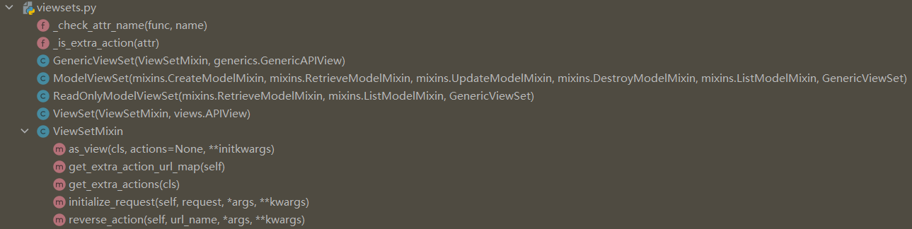
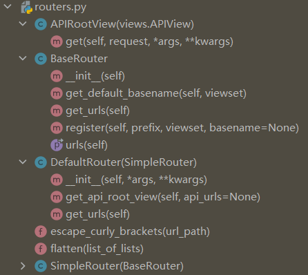
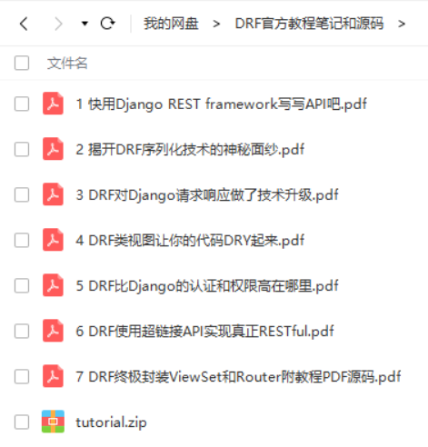

7 DRF终极封装ViewSet和Router附教程PDF源码¶

在DRF官方教程的学习过程中，一个很明显的感受是框架在不断地进行封装，我们自己写框架/工具/脚本/平台也可以模仿模仿，先完成底层代码，再做多层封装，让使用者很容易就上手操作。本文是教程的最后一篇，介绍ViewSets和Routers。
ViewSets¶
先看看之前在给User模型创建Endpoint时，我们新增的2个视图：
class UserList(generics.ListAPIView):
queryset = User.objects.all()
serializer_class = UserSerializer
class UserDetail(generics.RetrieveAPIView):
queryset = User.objects.all()
serializer_class = UserSerializer
DRF提供了rest_framework.viewsets：

可以把它们合成一个视图。
set是集合的意思，ViewSets就是视图集合。
ReadOnlyModelViewSet¶
我们先使用ReadOnlyModelViewSet把UserList和UserDetail视图合并成一个UserViewSet：
from rest_framework import viewsets
class UserViewSet(viewsets.ReadOnlyModelViewSet):
"""
This viewset automatically provides `list` and `retrieve` actions.
"""
queryset = User.objects.all()
serializer_class = UserSerializer
viewsets.ReadOnlyModelViewSet是只读视图集合，源码如下：
class ReadOnlyModelViewSet(mixins.RetrieveModelMixin,
mixins.ListModelMixin,
GenericViewSet):
"""
A viewset that provides default `list()` and `retrieve()` actions.
"""
pass
它继承了mixins.RetrieveModelMixin、mixins.ListModelMixin和GenericViewSet：
mixins.RetrieveModelMixin
class RetrieveModelMixin:
"""
Retrieve a model instance.
"""
def retrieve(self, request, *args, **kwargs):
instance = self.get_object()
serializer = self.get_serializer(instance)
return Response(serializer.data)
mixins.ListModelMixin
class ListModelMixin:
"""
List a queryset.
"""
def list(self, request, *args, **kwargs):
queryset = self.filter_queryset(self.get_queryset())
page = self.paginate_queryset(queryset)
if page is not None:
serializer = self.get_serializer(page, many=True)
return self.get_paginated_response(serializer.data)
serializer = self.get_serializer(queryset, many=True)
return Response(serializer.data)
viewsets.GenericViewSet
class GenericViewSet(ViewSetMixin, generics.GenericAPIView):
"""
The GenericViewSet class does not provide any actions by default,
but does include the base set of generic view behavior, such as
the `get_object` and `get_queryset` methods.
"""
pass
从源码可以看出，它提供了list()和retrieve()2个方法，正好对应UserList和UserDetail。
ModelViewSet¶
再使用ModelViewSet把SnippetList、SnippetDetail和SnippetHighlight视图合并成一个SnippetViewSet：
from rest_framework.decorators import action
from rest_framework.response import Response
from rest_framework import permissions
class SnippetViewSet(viewsets.ModelViewSet):
"""
This viewset automatically provides `list`, `create`, `retrieve`,
`update` and `destroy` actions.
Additionally we also provide an extra `highlight` action.
"""
queryset = Snippet.objects.all()
serializer_class = SnippetSerializer
permission_classes = [permissions.IsAuthenticatedOrReadOnly,
IsOwnerOrReadOnly]
@action(detail=True, renderer_classes=[renderers.StaticHTMLRenderer])
def highlight(self, request, *args, **kwargs):
snippet = self.get_object()
return Response(snippet.highlighted)
def perform_create(self, serializer):
serializer.save(owner=self.request.user)
@action装饰器用来创建除了create/update/delete以外的action，默认为GET请求，如果想改为POST请求，可以添加参数methods，它的源码如下：
def action(methods=None, detail=None, url_path=None, url_name=None, **kwargs):
"""
Mark a ViewSet method as a routable action.
`@action`-decorated functions will be endowed with a `mapping` property,
a `MethodMapper` that can be used to add additional method-based behaviors
on the routed action.
:param methods: A list of HTTP method names this action responds to.
Defaults to GET only.
:param detail: Required. Determines whether this action applies to
instance/detail requests or collection/list requests.
:param url_path: Define the URL segment for this action. Defaults to the
name of the method decorated.
:param url_name: Define the internal (`reverse`) URL name for this action.
Defaults to the name of the method decorated with underscores
replaced with dashes.
:param kwargs: Additional properties to set on the view. This can be used
to override viewset-level *_classes settings, equivalent to
how the `@renderer_classes` etc. decorators work for function-
based API views.
"""
methods = ['get'] if (methods is None) else methods
methods = [method.lower() for method in methods]
assert detail is not None, (
"@action() missing required argument: 'detail'"
)
# name and suffix are mutually exclusive
if 'name' in kwargs and 'suffix' in kwargs:
raise TypeError("`name` and `suffix` are mutually exclusive arguments.")
def decorator(func):
func.mapping = MethodMapper(func, methods)
func.detail = detail
func.url_path = url_path if url_path else func.__name__
func.url_name = url_name if url_name else func.__name__.replace('_', '-')
# These kwargs will end up being passed to `ViewSet.as_view()` within
# the router, which eventually delegates to Django's CBV `View`,
# which assigns them as instance attributes for each request.
func.kwargs = kwargs
# Set descriptive arguments for viewsets
if 'name' not in kwargs and 'suffix' not in kwargs:
func.kwargs['name'] = pretty_name(func.__name__)
func.kwargs['description'] = func.__doc__ or None
return func
return decorator
viewsets.ModelViewSet包含了增删改查视图集合，源码如下：
class ModelViewSet(mixins.CreateModelMixin,
mixins.RetrieveModelMixin,
mixins.UpdateModelMixin,
mixins.DestroyModelMixin,
mixins.ListModelMixin,
GenericViewSet):
"""
A viewset that provides default `create()`, `retrieve()`, `update()`,
`partial_update()`, `destroy()` and `list()` actions.
"""
pass
它继承了mixins.CreateModelMixin、mixins.RetrieveModelMixin、mixins.UpdateModelMixin、mixins.DestroyModelMixin、mixins.ListModelMixin、GenericViewSet：
其中
mixins.RetrieveModelMixin、mixins.ListModelMixin和GenericViewSet在前面已经介绍过了
mixins.CreateModelMixin
class CreateModelMixin:
"""
Create a model instance.
"""
def create(self, request, *args, **kwargs):
serializer = self.get_serializer(data=request.data)
serializer.is_valid(raise_exception=True)
self.perform_create(serializer)
headers = self.get_success_headers(serializer.data)
return Response(serializer.data, status=status.HTTP_201_CREATED, headers=headers)
def perform_create(self, serializer):
serializer.save()
def get_success_headers(self, data):
try:
return {'Location': str(data[api_settings.URL_FIELD_NAME])}
except (TypeError, KeyError):
return {}
mixins.UpdateModelMixin
class UpdateModelMixin:
"""
Update a model instance.
"""
def update(self, request, *args, **kwargs):
partial = kwargs.pop('partial', False)
instance = self.get_object()
serializer = self.get_serializer(instance, data=request.data, partial=partial)
serializer.is_valid(raise_exception=True)
self.perform_update(serializer)
if getattr(instance, '_prefetched_objects_cache', None):
# If 'prefetch_related' has been applied to a queryset, we need to
# forcibly invalidate the prefetch cache on the instance.
instance._prefetched_objects_cache = {}
return Response(serializer.data)
def perform_update(self, serializer):
serializer.save()
def partial_update(self, request, *args, **kwargs):
kwargs['partial'] = True
return self.update(request, *args, **kwargs)
mixins.DestroyModelMixin
class DestroyModelMixin:
"""
Destroy a model instance.
"""
def destroy(self, request, *args, **kwargs):
instance = self.get_object()
self.perform_destroy(instance)
return Response(status=status.HTTP_204_NO_CONTENT)
def perform_destroy(self, instance):
instance.delete()
修改URLConf¶
视图改为ViewSet后，需要同时修改URLConf，编辑snippets/urls.py：
from snippets.views import SnippetViewSet, UserViewSet, api_root
from rest_framework import renderers
snippet_list = SnippetViewSet.as_view({
'get': 'list',
'post': 'create'
})
snippet_detail = SnippetViewSet.as_view({
'get': 'retrieve',
'put': 'update',
'patch': 'partial_update',
'delete': 'destroy'
})
snippet_highlight = SnippetViewSet.as_view({
'get': 'highlight'
}, renderer_classes=[renderers.StaticHTMLRenderer])
user_list = UserViewSet.as_view({
'get': 'list'
})
user_detail = UserViewSet.as_view({
'get': 'retrieve'
})
urlpatterns = format_suffix_patterns([
path('', api_root),
path('snippets/', snippet_list, name='snippet-list'),
path('snippets/<int:pk>/', snippet_detail, name='snippet-detail'),
path('snippets/<int:pk>/highlight/', snippet_highlight, name='snippet-highlight'),
path('users/', user_list, name='user-list'),
path('users/<int:pk>/', user_detail, name='user-detail')
])
注意，ViewSet需要绑定http
methods和action，以指定请求方法对应的处理动作。
Routers¶
使用ViewSet的一大好处是可以自动配置路由，DRF提供了rest_framework.routers：

我们重新编写snippets/urls.py看看是什么效果：
from django.urls import path, include
from rest_framework.routers import DefaultRouter
from snippets import views
## Create a router and register our viewsets with it.
router = DefaultRouter()
router.register(r'snippets', views.SnippetViewSet)
router.register(r'users', views.UserViewSet)
## The API URLs are now determined automatically by the router.
urlpatterns = [
path('', include(router.urls)),
]
真是厉害！这封装简直高级！而且DefaultRouter提供了API根目录的Endpoint，我们甚至可以把views.py中的api_root也删了。
小结¶
本文是官方教程学习笔记的最后一篇了。可以从教程中了解到从函数视图到类视图，从View到ViewSet是如何封装起来的，实际运用中并不一定全部都得用类视图和ViewSet，还是需要平衡选择。后续还会有DRF系列的文章输出，不过作为阶段性成果，我把这7篇文章导成了PDF，和最后一版的源码，打包一起上传了，需要的话，可以在公众号后台回复【drf】获取：
